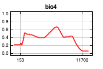
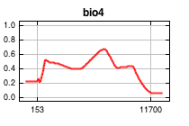

| Cumulative threshold | Logistic threshold | Description | Fractional predicted area | Training omission rate |
|---|
| 1.000 | 0.177 | Fixed cumulative value 1 | 0.860 | 0.000 |
| 5.000 | 0.223 | Fixed cumulative value 5 | 0.750 | 0.040 |
| 10.000 | 0.272 | Fixed cumulative value 10 | 0.640 | 0.079 |
| 1.334 | 0.190 | Minimum training presence | 0.849 | 0.000 |
| 13.281 | 0.300 | 10 percentile training presence | 0.583 | 0.099 |
| 36.192 | 0.447 | Equal training sensitivity and specificity | 0.327 | 0.327 |
| 24.983 | 0.411 | Maximum training sensitivity plus specificity | 0.431 | 0.198 |
| 1.334 | 0.190 | Balance training omission, predicted area and threshold value | 0.849 | 0.000 |
| 6.696 | 0.236 | Equate entropy of thresholded and original distributions | 0.710 | 0.059 |


 
